Playing the Game
A game of Legions Imperialis is split into several rounds, usually four to six. A round is split into several phases, with each phase progressing through a number of stages. Each phase is completed before moving onto the next. Once all of the phases are completed, the round ends and a new round begins. Each round consists of five phases, which are always completed in the following sequence:
Round Summary
- Orders phase
- Initiative phase
- Movement phase
- Combat phase
- End phase
Timing
Some effects take place at the start of a round or at the start of a phase. These effects are resolved before anything else happens in that round or phase respectively. Similarly, effects that take place at the end of a round or phase are resolved after everything else has happened in that round or phase. If there is more than one of these effects taking place at the same time, the player with Initiative chooses the order in which they take place; if effects take place before Initiative has been determined within a round then the winner of a roll-off decides.
Orders Phase
The Orders phase is broken down into two stages:
- Assign Orders
- Reveal Orders
Assign Orders
The Assign Orders stage is when both players plan out their round, determining what actions can be undertaken by the Army they control. This is accomplished by issuing an Order to each Detachment in the Army. Both players must issue one Order to each Detachment in their Army by placing tokens at the same time and in any order, face-down and hidden from their opponent, as follows.
An Order is issued by selecting a Detachment, then selecting an Order available to that Detachment and placing a token representing that Order face-down on either the Detachment's Order token slot on the Army roster or next to the Detachment on the battlefield. This process is repeated for every Detachment in the Army, unless another rule dictates that a given Detachment may not be issued an Order, or the Detachment already has an Order carried over from a previous round (such as the Fall Back Order). This includes Detachments that are not on the battlefield but have not been destroyed, such as those Embarked within a Transport (see page 96) or held in Reserve (see page 102). If a Detachment is no longer taking part in the battle, (for example, due to being destroyed or having left the table due to a Mission's special rule), then it cannot be issued an Order.
Once all players have issued an Order to each eligible Detachment, and all tokens have been placed face-down on either the battlefield or the controlling player's Army roster, the Assign Orders stage ends.
Reveal Orders
Once the Assign Orders stage has been completed, and all Detachments eligible to be issued an Order have a face-down Order token placed, the Reveal Orders stage is resolved. In this stage all Orders in play, whether on the battlefield or on an Army roster, are flipped face-up and revealed to all players. This may be done in any order, but the stage is not ended until all Order tokens have been flipped face-up and revealed. Once all Order tokens have been revealed, the Orders phase ends.
Tracking Activations with Orders
Players should use Order tokens to track which of their Detachments have been activated over the course of a particular phase, and which Detachments can no longer be activated that round (e.g., after a Detachment issued with First Fire Orders has fired during the First Fire stage).
If a Detachment completes its activation and cannot activate again this round - such as a Detachment issued with the First Fire Order firing in the First Fire stage - the token must be removed from the battlefield to show this. That Detachment is no longer considered to be issued with the given Order.
If a Detachment completes its activation during a given phase and can still activate later in the game - such as a Detachment issued with an Advance Order moving in the Movement phase, and thus still able to be activated in the Advance Fire stage later in the round - the controlling player can flip the token face-down to show the Detachment has activated. The Detachment is still considered to be issued with the given Order. At the end of the phase, flip all tokens face-up again.
Orders
The following Orders can be issued to Detachments during play. Note that the Fall Back Order may only be issued when a special rule instructs a player to do so and may not be voluntarily assigned during the Orders phase.
First Fire Orders
A Detachment issued with the First Fire Order may fire during the First Fire stage of the Combat phase but cannot move during the Movement phase.
Advance Orders
Each model within a Detachment issued with the Advance Order may move up to a number of inches equal to its Movement characteristic during the Movement phase and may fire in the Advancing Fire stage of the Combat phase. The Advance Order is the only Order which can be issued to a Detachment that is not in Detachment Coherency (see page 50), and one of two Orders which can be issued to a Detachment that is Broken (see Morale, page 63). A model cannot move within 1" of an enemy model, unless instructed otherwise (see Engagement Zones on page 51).
March Orders
Each model within a Detachment issued with the March Order may move up to a number of inches equal to twice its Movement characteristic. If the Detachment is made up entirely of Infantry models that are not Embarked upon a Transport when the Detachment is activated, it may move up to three times its Movement Characteristic during the Movement phase. Models in a Detachment issued a March Order may not fire during the First Fire or Advancing Fire stages of the Combat phase.
Charge Orders
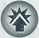
Models within a Detachment issued with a Charge Order may move up to a number of inches equal to its Movement characteristic, or the Detachment may Charge. If a Detachment Charges, models within the Detachment may move up to a number of inches equal to twice its Movement characteristic so long as at least one model within the Detachment ends in base- to-base contact with an enemy model.
A Detachment issued with the Charge Order may not fire during the First Fire or Advancing Fire stages of the Combat phase. A Detachment that is Engaged, or Engaged & Pinned at the start of the Orders phase, cannot be issued with a Charge Order.
Models in a Detachment issued with a Charge Order add 1 to any Fight roll they make while issued with that Order, so long as they have moved at least 1" during the preceding Movement phase. Charge is one of two Orders that can be issued to a Detachment that is Broken.
Fall Back Orders
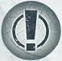
Certain situations, such as failing a Morale test, may require a Detachment to be issued with a Fall Back Order or to have its existing Order replaced with a Fall Back Order. When a Fall Back Order is issued to a Detachment, the controlling player must remove any other Order it is issued with. However, unless stated otherwise, a Detachment cannot voluntarily be issued with a Fall Back Order by a player.
A Detachment with a Fall Back Order cannot be activated in any phase other than the End phase. As such, a Detachment with a Fall Back Order cannot move in the Movement phase and cannot fire in any phase. In the End phase, a Detachment with a Fall Back Order must be activated and 'flees', as described on page 65.
In the Order phase, a Detachment with a Fall Back Order cannot be issued a new order, nor remove the Fall Back Order unless a rule specifically says to.
A Detachment with a Morale value of '-' cannot be issued with a Fall Back Order for any reason, and instead retains its original Order.
For more information on how Detachments that are issued with the Fall Back Order act, see page 64.
Initiative Phase
Once all Orders have been issued, players roll off to determine which player has Initiative this round. The player who wins the roll-off chooses who has Initiative for the round. If, during the first round, the result is a tie, players re-roll until one player wins. In subsequent rounds, if the result is a tie, the player who did not have Initiative during the previous round has Initiative.
Movement Phase
The Movement phase is where players move their Detachments around the battlefield. During this phase, players take it in turns activating Detachments and moving them. Once all Detachments have been activated, the phase ends.
Activating Detachments
During the Movement phase, players take it in turns, starting with the player with Initiative, to choose and activate one of their Detachments that has been issued an Advance Order, Charge Order or March Order. Detachments with a First Fire Order cannot be activated during this phase unless it is to Overwatch (see page 52). If one player has activated all Detachments they control with an Advance Order, Charge Order or March Order and the other player still has Detachments eligible to be activated in this stage, the other player activates each of their remaining eligible Detachments in an order of their choosing.
When a Detachment is activated, the controlling player may move the Detachment in a manner specified by its Order. For example, models in a Detachment issued with an Advance Order may move up to a number of inches equal to the model's Movement characteristic.
Once a Detachment has finished its activation, play passes to the opposing player, who then activates one of their eligible Detachments.
All Detachments with an Advance Order, March Order or Charge Order must be activated during this phase, though they can be activated and do nothing - this includes any eligible Detachment that is not on the battlefield but is still in play, such as Detachments with the Flyer special rule or Detachments in Reserve (see page 102).
Activating Detachments in Reserve
Detachments that are in Reserve cannot be activated until all friendly Detachments that are on the battlefield have been activated; this applies in all phases, not just the Movement phase. The exception to this rule is if the Detachment is arriving on the battlefield from Reserve this round (e.g., Flyers moving onto the battlefield, Detachments Deep Striking, etc.), in which case the Detachment can be activated before other friendly Detachments and can arrive as normal; it must arrive on the battlefield during its activation.
Movement
During the Movement phase, certain Orders allow a Detachment to move in different ways. Sometimes a Detachment may even be moved involuntarily as a result of an enemy attack or an in-game effect. This section details how Detachments are moved around the battlefield.
When a Detachment is activated in the Movement phase, models within that Detachment can:
-
Move up to a number of inches equal to their Movement characteristic if issued with an Advance Order.
-
May Charge or move a number of inches equal to their Movement characteristic if issued with a Charge Order.
-
Move twice their Movement characteristic if issued with the March Order or, if the Detachment is made up entirely of Infantry models that are not Embarked on a Transport when the Detachment is activated, up to three times its Movement characteristic.
Most Detachment types can move in any direction and finish their move facing in a direction of the controlling player's choice. However, some Detachment types have some restrictions on their movement - the most common example is Titans, which have a number of unique rules covered on page 75.
A Movement characteristic of '-' means models in the Detachment cannot move, and the characteristic cannot be modified in any way.
No Orders in the Movement Phase
At times, a player may forget to issue an Order to a Detachment. In such instances, the Detachment is still activated. When a Detachment without an Order is activated in the Movement phase, it is immediately issued with an Advance Order and acts accordingly.
Coherency
Detachment Coherency
If a Detachment has two or more models within it then those models must remain in Detachment Coherency whilst on the battlefield. When a Detachment is set up on the battlefield, all models within the Detachment must be deployed within 2" of one other model from that Detachment. During the battle, all models must remain within 2" of at least one other model from the same Detachment that is on the battlefield - this is known as 'Detachment Coherency'. If a Detachment cannot finish a move without breaking Detachment Coherency, then the move cannot be made.
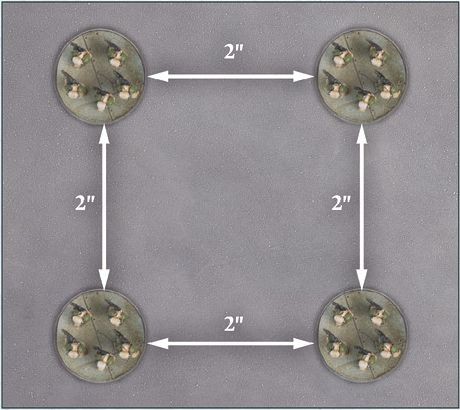
LIR50.1: A Detachment in Coherency.
At all times, a Detachment's models must form a single contiguous group; they cannot form several groups where two models are within 2" of one another but not within 2" of another model within the Detachment.
Sometimes, a Detachment's Coherency is broken for reasons beyond the controlling player's control, such as the destruction of models by enemy fire. Detachments that have involuntarily broken Coherency cannot be voluntarily issued any Order other than the Advance Order, though they retain any Order already issued that round.
The next time the Detachment moves, it must re-establish Coherency; if it cannot do so, any model that is not within 2" of at least one other model from the same Detachment is destroyed and removed from the battlefield. If a Detachment has not yet established Detachment Coherency after models are destroyed in this way, the largest group of models from that Detachment (i.e., the most models in Coherency with one another) are left on the battlefield, while any remaining groups are destroyed. If two or more groups are of equal size, randomly determine which group is not destroyed.
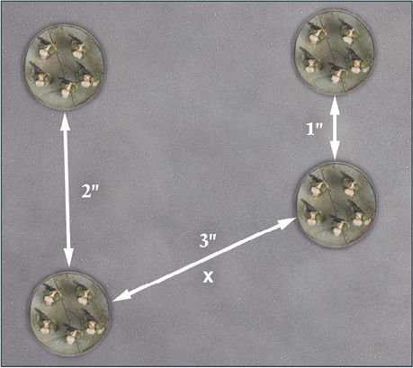
LIR50.2: A Detachment with broken Coherency.
Moving Through Models
A model can move through any friendly model, so long as it does not end its movement with its base (or model) overlapping another base or model. A model cannot move within 1" of an enemy model of equal or higher Scale than its own unless instructed otherwise. A model can move within 1" of an enemy model and through an enemy model of lower Scale so long as it does not end its movement within 1" of an enemy model. This 1" zone is known as the 'Engagement Zone'.
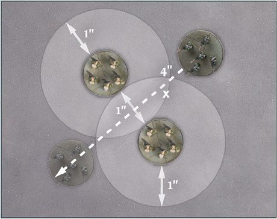
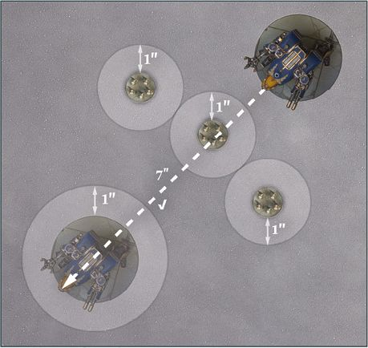
LIR51.1: (Top) A Solar Auxilia Lasrifle model cannot move through enemy Space Marine models due to their Engagement Zones. (Bottom) A Warhound Titan however can move through enemy Space Marine models, as it is of higher Scale - 5 vs 1 respectively.
Engagement Zone
As stated previously, models cannot enter the Engagement Zone of an enemy model of equal or higher Scale than their own, and cannot end their movement within any enemy model's Engagement Zone regardless of that model's Scale. An exception to this rule is when a model is issued with a Charge Order. In this case, a model may move within 1" of one or more enemy models provided that it ends its movement in base to base contact with one or more of those enemy models.
A Detachment which has one or more models in base to base contact with one or more enemy models is said to be 'Engaged' with the Detachment of those enemy models. If a Detachment is Engaged with an enemy Detachment of a Scale equal to or higher than its own, then the Detachment is said to be 'Engaged & Pinned' instead. Both Engaged Detachments and Engaged & Pinned Detachments are issued an Order during the Orders phase as normal.
The terms 'Engaged' and 'Engaged & Pinned' refer to two different yet similar states that can apply to Detachments during a game of Legions Imperialis. When a rule refers to 'Engaged Detachments', it refers to Detachments that are Engaged and Detachments that are Engaged & Pinned. A rule that refers to Detachments that are not Engaged & Pinned but are Engaged will reference Detachments that are 'Engaged but not Pinned'.
Engaged and Engaged & Pinned Detachments
Models in an Engaged & Pinned Detachment cannot voluntarily move unless otherwise instructed, nor can an Engaged & Pinned Detachment fire during the Combat phase.
A Detachment that is Engaged but not Pinned can move as normal during the Movement phase, fire as normal during the Combat phase and can voluntarily leave base to base contact with enemy models. If an Engaged Detachment moves out of base to base contact, it is no longer Engaged and follows all the normal rules for moving - unless issued with a Charge Order, a previously Engaged Detachment must end its move outside of an enemy model's Engagement Zone.
An Engaged but not Pinned model issued with a Charge Order cannot move out of base to base contact with an enemy Detachment and then move back in to gain the +1 bonus during the Combat phase - it can, however, move to become Engaged with a different enemy Detachment, as long as all models in the Detachment with the Charge Order leave the Engagement Zone of all models in the Detachment it was originally Engaged with.
Multiple Engaged Detachments
There will be instances where a Detachment is Engaged with two or more enemy Detachments. In such instances, a Detachment is deemed Engaged & Pinned if any of the Detachments it is Engaged with are of a Scale equal to or greater than its own.
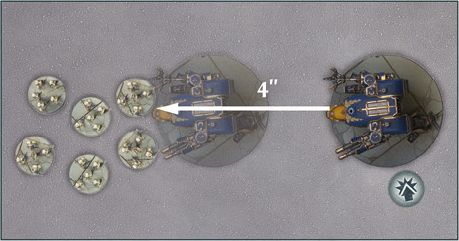
LIR52.1: A Legio Astorum Warhound Titan issued with a Charge Order Engages a Legion Tactical Detachment. As the Titan is a larger Scale than the Tactical Marines (1 vs. 5 respectively), the Titan is Engaged but not Pinned.
LIR52.2: A Warhound Titan charges into the combat in LIR52.1. As the two Titans are the same Scale (5), both Titans are now Engaged and Pinned. If, during the subsequent Combat phase, the charging Titan is destroyed, then the Legio Astorum Titan is no longer Pinned and so can fire as normal even if it remains Engaged.
Pile-in
An Engaged & Pinned Detachment that is activated in the Movement phase while issued with a Charge Order, March Order or Advance Order may make a Pile-in move. Only models that are not in base to base contact with an enemy model can make a Pile-in move.
When making a Pile-in move, models move as dictated by their Order, however, they must end their movement closer to a model from an enemy Detachment they are Engaged with than when they started. Where possible, they must also end their move in base contact with an enemy model from a Detachment they are Engaged with (they can do this even if issued with an Advance Order or March Order) and cannot move into base contact with a model from any other enemy Detachment(s).
Where possible, a model making a Pile-in move must first move into base to base contact with an enemy model that is not in base to base contact with a friendly model; if none are available, it can move into contact with any other enemy model that meets the previous criteria.
Overwatch
A Detachment that has been issued with an Advance Order or First Fire Order may call Overwatch in the Movement phase during an enemy Detachment's activation. This can happen at any point during the enemy Detachment's activation, including during a Detachment's movement or when a Detachment is activated but the controlling player chooses not to move the models in the Detachment.
To call Overwatch, the following conditions must be met:
- The Detachment calling Overwatch must be issued with an Advance Order or First Fire Order.
- The activating Detachment must be an eligible target for the firing Detachment - see Firing on page 56 for more details.
- No other Detachment has called Overwatch during the same enemy Detachment's activation.
When a Detachment calls Overwatch, the normal sequence of the phase is paused. The Overwatching Detachment may immediately fire, targeting only the Detachment which is completing its activation, following the normal rules for firing (with the enemy Detachment that has been activated being the chosen target). Any Hit rolls made as part of an Overwatch subtract 2 from the result of the roll, in addition to any other modifiers - as noted in Firing, a natural roll of a 6 always scores a Hit, no matter the modifiers.
Once the Overwatch has been resolved, the controlling player removes the firing Detachment's Order token - it is no longer issued with that Order and cannot be activated later during the round, even if only some of the models in the Detachment fired during the Overwatch. The enemy Detachment then finishes its activation.
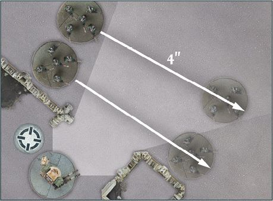
LIR53.1: The moving Solar Auxilia pass through the line of sight of the Contemptor Dreadnought. As such, the Dreadnought can call Overwatch.
Designer's Note: Overwatch and Timing
When models move, they aren't really picked up from one point on the battlefield and placed at another. Furthermore, time is abstract in a tabletop game - everything is happening simultaneously and a Detachment moves as one, not one model at a time.
There will be times when Overwatch (see page 52) is called against an enemy Detachment that starts its activation out of line of sight of the Overwatching Detachment and/or would end it out of sight of the Overwatching Detachment. In such cases, it is presumed the Overwatching Detachment catches its target in the midst of movement. When firing, determine how many enemy models from the target Detachment would cross into line of sight of the Overwatching models during the Detachment's movement. All of these are eligible targets if other requirements are met and can be fired upon and allocated Hits as normal.
The Overwatching Detachment can choose the 'time' it fires - for example, if the target leaves an area of terrain, crosses Open terrain and enters a new area of terrain (all of which are visible and within range of the Overwatching Detachment), that Detachment can choose to fire at its target when it is in Open terrain, avoiding negative modifiers due to terrain.
Some weapons have effects which reduce the characteristics, such as Movement, of the target Detachment - where this is the case, these reductions come into effect at the end of the target Detachment's activation, not after resolving an Overwatch.
Combat Phase
It is during this phase that Detachments issued with a First Fire Order or an Advance Order may fire upon enemy Detachments, while Engaged Detachments fight in close combat.
The Combat phase is broken down into three stages:
- First Fire stage
- Engagement stage
- Advancing Fire stage
The Order a Detachment is issued with determines which stage it can be activated in. Players run through the stages in order. Once one stage has been completed, the phase moves on to the next stage.
First Fire Stage
In the First Fire stage, players take it in turns, starting with the player with Initiative, to activate one of their Detachments that is issued with a First Fire Order. If one player has activated all Detachments they control issued with a First Fire Order and the other player still has Detachments eligible to be activated in this stage, the other player activates each of their remaining eligible Detachments in an order of their choosing. All Detachments issued with a First Fire Order must be activated in this stage, even if they do nothing. However, a Detachment that was issued a First Fire Order that has since had them removed (due to calling Overwatch or failing a Morale test) may not be activated in this stage.
When a Detachment is activated during the First Fire stage, it may fire - see Firing on page 56 for more details - or do nothing. Once the Detachment's activation is complete, remove the Detachment's Order token; if the Detachment has not fired, either due to not wishing to fire or having no eligible target, the Order is still removed and the Detachment can do nothing else this round unless instructed otherwise.
Detachments that are Engaged & Pinned at the start of the First Fire stage cannot be activated and simply discard their First Fire Order at the end of the stage.
Engagement Stage
In the Engagement stage, Detachments that are Engaged fight against one another in close quarters combat. Only models that are in base to base contact with an enemy model fight in the Engagement stage - the remainder of the Detachment is Engaged but out of position to aid in the unfolding close quarters fight.
At the start of the Engagement stage, players should identify each 'Combat'. In most instances, a Combat is when two opposing Detachments are Engaged with one another (i.e., at least one model from each Detachment is in base to base contact with the other).
Other examples of Combat can occur - usually when a Detachment is Engaged with more than one enemy Detachment. In a case where one Detachment is Engaged with two or more enemy Detachments, all of those Detachments are said to be in the same Combat.
The most complex cases of Combat involve having multiple Detachments within the same Combat where not all Detachments are Engaged with every enemy Detachment within the Combat.
To determine which Detachments are within the same Combat, pick a Detachment and determine what enemy Detachments it is in base contact with. Then, determine any additional Detachments those enemy Detachments are in base contact with. Repeat this sequence, jumping from Engaged Detachment to Engaged Detachment, until no more Detachments can be picked - all these Detachments are in one Combat.
The following diagrams highlight examples of Combat.
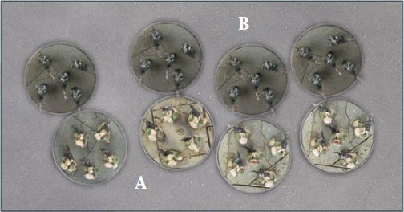
LIR54.1: A Legion Tactical Detachment (A) and a Solar Auxilia Lasrifle Tercio Detachment (B) are Engaged with one another and are said to be in a Combat.
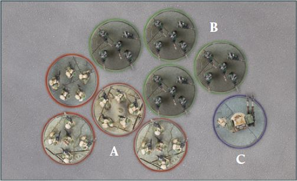
LIR55.1: A Contemptor Dreadnought Detachment (C) has engaged the Lasrifle Tercio (B) from LIR54.1. All three Detachments are said to be in a Combat.
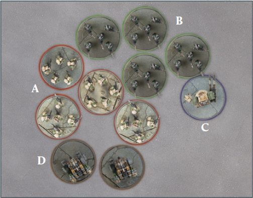
LIR55.2: A more complex example. The Legion Tactical Detachment (A) is Engaged with a Lasrifle Tercio (B) and an Auxilia Aethon Heavy Sentinel Patrol Detachment (D). The Lasrifle Tercio is also Engaged with the Dreadnought Detachment (C). As such, all four Detachments are within the same Combat, even though the Dreadnoughts and Sentinels are not Engaged with one another.
Once all Combats have been determined, each Combat is resolved in turn, in an order determined by the player with Initiative - see Combat on page 60 for more details. Any Detachments issued with a Charge Order must remove their Order token at the end of the Engagement stage, regardless of whether they participated in a combat or not. If a Detachment that began the Engagement stage Engaged has no models in base to base contact with enemy models, it is no longer Engaged.
Combat vs. Engaged
It is important to remember that Detachments within the same Combat are not necessarily Engaged with one another. For example, a Detachment (A) is Engaged with an enemy Detachment (B) if at least one model from A is in base to base contact with at least one model from B. If a friendly Detachment (C) is also in base to base contact with B, and thus is Engaged with it, and also in base to base contact with another enemy Detachment (D) then A and D are in the same Combat, but are not Engaged. This can come into play with rules that make reference to enemy Detachments a Detachment/model is Engaged with; these would not necessarily affect all enemy Detachments in the same Combat.
It may help to visualise a Combat as a chain - if you can pick a single Detachment and trace a path to another Detachment along a series of Engaged Detachments, then they are all in the same Combat.
Advancing Fire Stage
In the Advancing Fire stage, players take it in turns, starting with the player with Initiative, to activate one of their eligible Detachments issued with an Advance Order and fire with it.
A Detachment can be activated and may fire during the Advancing Fire stage if it is not Engaged & Pinned and is issued with an Advance Order and is on the battlefield. Detachments in Reserve are not activated during the Advancing Fire stage, unless instructed otherwise.
When one player has activated all eligible Detachments, the other player activates each of their remaining Detachments in an order of their choosing. All Detachments issued with an Advance Order or First Fire Order must be activated in this stage, though they can be activated and do nothing. When a Detachment is activated it may fire - see Firing on page 56 for more details - or do nothing.
Once a Detachment has finished its activation, the controlling player removes its Order token.
Firing
At various points during the game, Detachments will fire upon enemy Detachments. When called upon to fire, this sequence is followed:
Firing Sequence
- Choose Targets
- Make Hit rolls
- Resolve Hits
Choose Targets
Before any dice are rolled, a Detachment's controlling player must declare which models within the Detachment are firing, what weapons they are firing with and nominate a target for each model and/or weapon within the Detachment that is firing. To do this, they choose a single enemy Detachment as the target - all models from a Detachment must fire at the same target, unless a special rule allows them to do otherwise. On occasion, a weapon will have two or more profiles associated with it. If this is the case, the controlling player must choose which of the profiles the model is using each time it fires that weapon. Some models may have more than one weapon on their profile; such models can fire all of their weapons when firing or only some of them if the controlling player wishes. Unless instructed otherwise, a given model must fire all of its weapons that it chose to fire at the same target.
A model can only target an enemy Detachment which has at least one model within line of sight of the firing model. Then, measure the distance between the firing model and the closest visible model in the enemy Detachment - if the distance is greater than the range of all weapons, as shown on the Detachment's datasheet, then that model cannot fire at the target. If a model has multiple weapons and some are in range and others are not, only those weapons that are in range can fire. If some models within a Detachment cannot fire at a target but others can, the Detachment can still fire - simply resolve the firing only for the models and weapons that are eligible to fire at the target.
A model cannot target an enemy Detachment that is Engaged & Pinned but can target an enemy Detachment that is Engaged but not Pinned. A model targeting a Detachment that is Engaged but not Pinned suffers a -1 modifier to all its Hit rolls made against that Detachment unless the target Detachment's Scale is two or more higher than every Detachment it is Engaged with.
For example, if a Warhound Titan (Scale 5) is Engaged with a Legion Tactical Detachment (Scale 1) and an Auxilia Super- heavy Tank Squadron (Scale 3), then enemy models firing upon it would not suffer a -1 to their Hit rolls. However, if it was Engaged with both these Detachments and a Cerastus Knight Lancer (Scale 4), then enemy models firing at the Titan would suffer a -1 modifier.
Make Hit Rolls
Once all targets have been chosen, the controlling player of the firing Detachment chooses one of these targets and resolves any attacks against it, making Hit rolls for each model firing upon that target. To make a Hit roll, roll a number of D6 equal to the Dice value of the weapon that is firing. After applying any modifiers to the roll, compare the result of each dice to the To Hit value of the firing weapon.
If the result is less than the To Hit value of the weapon, it is a miss and that dice is discarded. If the result is equal to or greater than the To Hit value of the weapon, a Hit is scored. These Hits are gathered together to form the Hit pool.
As noted previously, a natural roll of a 6 is always a Hit and a natural roll of a 1 is always a miss, regardless of modifiers.
Some special rules will state that a target Detachment suffers a number of Hits. In these cases, no Hit rolls are made. Instead, the Detachment in question simply suffers a number of automatic Hits equal to the number stated by the rule.
Obstructions
In general, if part of a model is visible to a firing model then it can be targeted without penalty. The exception to this is when firing at a Knight or Titan. When a model chooses a Knight or Titan as its target, the controlling player should determine how much of the target is visible. If at least 25% of the target model is obscured, then the firing model suffers a -1 modifier to its Hit rolls. If the target model is at least 50% obscured, it suffers a -2 modifier to all its Hit rolls instead. If the firing model can only see insignificant elements on a model, such as protruding weapon barrels or banners, then the target counts as being wholly obscured. If a Knight or Titan is wholly obscured then it cannot be chosen as a target. If some of the target Detachment's models would have different modifiers, such as some models being 50% obscured and others 25%, then the controlling player of the firing Detachment can choose which modifier applies to the Hit rolls. However, if they choose a lesser modifier (e.g., the -1 from being 25% obscured), any resulting Hits can only be allocated to models affected by that modifier or a lesser one (e.g., 25% obscured models and non- obscured models).
Resolve Hits
If one or more Hits are scored against a target, the player controlling the target must now make Save rolls for it.
To do this, each Hit must be allocated. To allocate Hits, the player controlling the target Detachment chooses a model from the target Detachment and allocates a single Hit from the Hit pool to it. Hits are allocated and resolved one Hit at a time.
A model can only be allocated a Hit if it is an eligible target for the firing model - in most instances, this means the model must be in range and line of sight of the firing model. If a model in the Detachment has already suffered a Wound, it must be allocated Hits first if it is an eligible target. If no eligible targets remain (i.e., because they have been destroyed already), the remaining Hits are discarded.
The controlling player then makes a Save roll for that model by rolling a D6. Save rolls are made using a Save characteristic. Typically, this is made against the Armour Save characteristic of a model, though some special rules grant additional types of Save characteristics; the controlling player must choose which Save characteristic they wish to use. An Armour Save of '-' means models in the Detachment have no Armour Save and therefore it can't be improved or worsened in any way.
Apply any modifiers to the Dice roll or the target's Save characteristic (e.g., due to the AP of the weapon). For example, if a target model has an Armour Save of 3+ and is hit by a weapon with an AP of -2, the target's Armour Save is worsened to 5+ against that weapon. The AP of a weapon can be modified by a special rule or weapon Trait. The AP value is always modified before applying it to the target's Armour Save characteristic, which is relevant for some weapon Traits such as Light AT (see page 82). After applying any modifiers, compare the Dice roll against the chosen Save characteristic.
If the result is equal to or greater than the target's Save characteristic, no damage is done and the Hit is discarded. If the result of the roll is lower than the model's Save characteristic, that model suffers a Wound and reduces its Wounds characteristic by 1. When a model is reduced to 0 Wounds, it is destroyed and removed from the battlefield.
As stated previously, when making a Save roll a natural 1 is not an automatic failure and a natural 6 is not an automatic success - a model can have a 1+ Armour Save characteristic after modifiers (in which case it will automatically pass its Save roll) or be unable to pass a Save roll on a single D6 due to the AP of the firing weapon (in which case it will automatically fail its Save roll).
All Hit rolls must be made and resolved against a chosen target before moving onto the next target.
Multiple Save Characteristics
All models have an Armour Save characteristic shown on their datasheet. However, various special rules can confer additional Save characteristics, such as the Invulnerable Save (X) special rule or a Cover Save granted by an area of terrain (see page 67). These additional Save characteristics can be used in place of the Armour Save characteristic of the model when making a Save roll.
Unless instructed otherwise, a model can only make a single Save roll against each Hit, regardless of how many Save characteristics it has available to it. However, the controlling player may choose which Save characteristic a model uses to make a Save roll for each Hit scored - usually, this will be the best Save available to them.
For example, a Legion Tactical Detachment is Garrisoned within a Civilian Structure. After being fired upon, the Detachment's models need to make three Save rolls due to Hits caused by a weapon with an AP of -1. The Armour Save characteristic of the models in the Detachment after being modified by the AP would be 6+, while the Cover Save characteristic of the Structure, which is not modified by the weapon's AP value, would give a 4+ Save. As such, the controlling player chooses to use the Cover Save when making Save rolls.
Multiple Wounds
In Legions Imperialis, most models only have 1 Wound but some, such as Titans or Knights, have more. You can keep track of a model's Wounds by placing a counter next to it for each Wound it has suffered or with a dice showing the number of Wounds it has suffered. In all cases, it should be clear to both players how many Wounds a model has suffered and ideally a different colour dice should be used to prevent accidentally picking it up.
Rear Armour
It is common for armoured war machines to have weaker armour in the rear than the front. To represent this, the direction from which a target model is being fired upon can be important when it comes to making Save rolls. As such, the following rule applies to Vehicles, Super-heavy Vehicles, Knights and Titans:
When a Hit is allocated against a Vehicle, Super-heavy Vehicle, Knight or Titan, determine which of the target's Arcs the firing model is within. If the firing model is within the target's Rear Arc, the AP of the firing weapon is improved by 1 (for example, an AP of -1 would become AP -2) for that Hit. This takes effect after other rules, such as the Light AT trait, modify the AP (e.g., the AP of a Light AT weapon would be reduced to 0 then improved to -1 if within the target's Rear Arc) - see page 77 for more information on Traits.
Any Hits scored by a firing model in a target's Rear Arc that are allocated to a Void Shield (see page 97) do not improve their AP by 1. In other words, a weapon with an AP of 0 or worse would still be automatically discarded when allocated to a Void Shield, even if the firing model was in the target's Rear Arc.
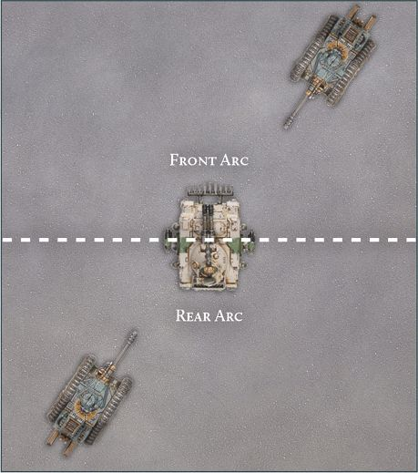
LIR58.1: Two Leman Russ Vanquishers target a Predator. The Leman Russ in the Predator's Rear Arc improves the AP of its weapons by 1; any Hits caused by its Vanquisher battle cannon will have an AP of -3.
Fast Dice Rolling**
When a Detachment is firing, the controlling player rolls dice for each model's weapons that are firing on a target. In most cases, more than one model from a Detachment will be firing on the same Detachment and, more often than not, with the same weapon(s). To keep the game flowing, players are encouraged to roll all the Hit rolls against the same target together.
Where multiple models are firing the same weapon, this can be done by simply totalling the Dice value of all models firing a weapon and rolling a number of D6 equal to that value. If more than one weapon is being fired at the same target, the controlling player can roll for each weapon separately or roll Hit rolls for all weapons firing at the same target at the same time. If the latter is chosen, which dice are rolled for which weapon must be made clear - for example, by using differently coloured dice for different weapons.
Similarly, the process of making Save rolls can be sped up as well. If all models within the target Detachment are identical, then the controlling player may roll all Save rolls together without having to allocate Hits to individual models. Any models destroyed due to failed Save rolls must be chosen from those models that are within range and line of sight of at least one model firing at the target Detachment.
When there are models with different Save characteristics or models with different Wound characteristics, Hits should still be allocated more stringently, to ensure the correct Save rolls are made.
Combat
Combat represents close-ranged fighting and encompasses hand-to-hand fighting, grenades and other short-ranged weaponry and equipment that can aid in such fights, such as the crushing treads of a tank. A model's proficiency in combat is represented by its CAF characteristic, which can be found on its datasheet.
Combats are fought during the Engagement stage of the Combat phase. This sequence is followed when resolving a Combat:
Combat Sequence
- Pair off Fights
- Resolve Fights
- Determine Combat result
- Withdraw
Pair Off Fights
At the beginning of each Combat, models are paired off against one another into 'Fights'.
Any model that is in base to base contact with one or more enemy models can be paired - models from a Detachment that is in a Combat but are not in base to base contact with an enemy model are ignored.
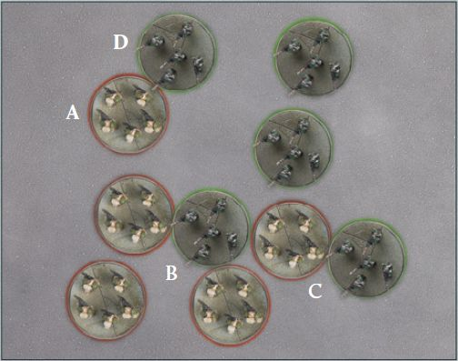
LIR60.1: A Legion Tactical Detachment (highlighted in red) is Engaged with a Solar Auxilia Tercio (highlighted in green). Models A and D are paired off against one another as they are only in base-to-base contact with one another. Tactical Legionary C is in base-to-base contact with two enemy miniatures - it is paired with Solar Auxilia C to form a single one-on-one combat. The two Space Marines B are paired off with Solar Auxilia B - this is two Fights that will be resolved one after another.
Models that are in base to base contact with a single enemy model are automatically paired off against one another into a Fight. If two or more models are in contact with the same enemy model, and if those models are not in contact with any other enemy models, that enemy model must fight each model in turn. In other words, that enemy model must take part in a Fight with each model in contact with it.
In some cases, it may be possible to pair a model off with more than one enemy model; models are always paired off into one-to-one Fights where possible. If all enemy models a model could be paired off with are already paired off, the player with Initiative chooses which Fight it is paired off into. The player with Initiative also chooses which models are paired off when several models are all in base contact with several enemy models.
For the sake of clarity, all models must be paired off before any Fights are resolved. If both players agree, models can be separated slightly to show which models are in which Fights.
Designer's Note: What is a Fight?
A Fight is a clash between two models. During Combat, models are paired off against enemy models, with some instances resulting in a model being paired off against two or more enemy models. Players make Fight rolls for each pair of models - each roll is a separate Fight. This means most models will have one Fight during Combat, while an outnumbered model might be involved in several Fights. Each Fight is resolved separately, as follows.
Resolve Fights
The player with Initiative chooses a model within the Combat and resolves any Fights that model is involved in. The chosen model must resolve all Fights in turn before another model is chosen. In the case of a model being involved in multiple Fights, the player with Initiative chooses the order the Fights are resolved in.
The respective controlling players make a Fight roll for each model involved in the Fight, rolling 2D6 and adding its CAF to the result, along with any other relevant modifiers. For example, models within a Detachment issued with Charge Orders that moved at least 1", including during a Pile-in move, during this round's Movement phase add 1 to the result of the Fight roll.
After both players have rolled, compare the results; the model with the highest roll wins the Fight, while the losing model suffers a Wound. If the result of the Fight rolls are the same, the Fight is a tie, neither model suffers a Wound, and they remain in base to base contact. Unless instructed otherwise, no Save rolls of any kind can be made against Wounds suffered during a Fight.
For each Fight a model participates in beyond the first each round, the opposing player rolls an additional D6 for their model's Fight roll. This is cumulative, i.e., during a model's second Fight of a round the opposing player would roll 3D6, for its third Fight the opposing player would roll 4D6 and so on. A model can only ever roll a maximum of 6D6 during a Fight roll, regardless of the origin of extra dice.
Once all of a model's Fights have been resolved, the player with Initiative chooses another model and repeats the process, until all Fights in the Combat have been resolved.
Determine Combat Result
Once all Fights within a Combat have been resolved, players need to determine which side won the Combat. To do so, determine which side won the most Fights - the side that won the most Fights is the winner of the Combat. If one side has no models left in the Combat, then it automatically loses the Combat, even if it won the most Fights.
All Detachments on the losing side that are involved in the Combat must make a Morale check (see page 64). If the check is passed, nothing happens. If the check is failed, the Detachment Withdraws. A Detachment that is part of a Formation that is Broken must roll two D6 and choose the lower result when making a Morale check in this way. If a Detachment has a Morale characteristic of '-', then it does not make a Morale check and does not Withdraw.
If both sides won the same amount of Fights, the Combat is a draw. If the fight was a draw, neither side makes Morale checks. Any Detachments which have one or more models in base to base contact with enemy models remain Engaged - otherwise a Detachment is not Engaged once the Combat ends.
Withdraw
When a Detachment Withdraws, it makes a Withdrawal move. To make a Withdrawal move, the controlling player rolls a D6 for the Withdrawing Detachment - each model then moves a number of inches equal to the D6 roll plus their Movement characteristic. A Withdrawal move follows the normal rules for movement with the following exceptions:
-
A model making a Withdrawal move must move directly towards the controlling player's battlefield edge, taking the shortest possible route to do so. If a model making a Withdrawal move moves into base contact with its battlefield edge, it stops moving.
-
A model making a Withdrawal move can move through other models and Engagement Zones, and must move even if it is Engaged & Pinned.
-
If, during a Withdrawal move, a model moves through an enemy Detachment, other than a Detachment it began the move Engaged with or was part of the Combat they are Withdrawing from, it must make a Save roll, using a Save characteristic of its choice - if the roll fails, the model suffers a Wound. If the Scale of the Withdrawing model is at least 3 larger than the Detachment it passed through (e.g., a Scale 4 model moving through a Detachment with a Scale of 1), the Save roll is automatically passed. A model makes a check for each enemy Detachment it moves through. A natural 6 is an automatic success even if the model has no Save characteristics other than '-', and a natural 1 is always a failure.
-
While Withdrawing, if a model would end its movement overlapping a friendly model, move it the shortest distance possible so it is not overlapping. If a model would end its movement overlapping an enemy model, the Withdrawing model is destroyed.
Models within a Detachment must maintain Coherency where possible. When moving as part of a Withdrawal move, a model cannot move off the battlefield. If, for whatever reason, a model from a Withdrawing Detachment cannot leave the Engagement Zone of models from the Detachment they were Engaged with, then that model is destroyed.
A model that makes a Withdrawal move cannot fire in the same round they make a Withdrawal move.
Morale
Morale consists of two linked sets of rules: those for the Broken state, which indicates a Formation's ability to maintain combat operations in the face of heavy casualties, and those for Morale checks, which track an individual Detachment's fighting spirit.
Broken
A Formation may become 'Broken' due to casualties taken during a round. After resolving Firing against a Detachment, and at the end of the Engagement stage of the Combat phase in which a Detachment has fought a Combat, the controlling player should check if the Detachment's Formation has equalled or exceeded its Break Point.
A Formation's Break Point is equal to half the total number of the models within the Formation at the start of the battle - unless otherwise noted, this includes models that were on the battlefield and off the battlefield, due to being in Reserve or for another reason. Break Points are rounded up. Titan and Knight models add their total starting Wounds characteristic, rather than the number of models, to the total model count of a Formation instead, and the current number of Wounds lost counts towards the Formation's Break Point.
For example, a Formation with 28 models has a Break Point of 14, while a Formation with 27 models will also have a Break Point of 14 (rounded up from 13.5).
If the same Formation also included a Detachment containing three Knight Paladins, each of which has 3 Wounds, then the Formation would have 28 non-Knight models and 3 Knight models. As such, the Formation would have 28 models plus 9 for the total starting Wounds of the three Knights, for a total of 37 - the Break Point of that Formation would be 19.
As such, if, during the course of the battle, 16 models from the Detachment had been destroyed, one of which was a Knight Paladin, and one of the other Knight Paladins has suffered a Wound, the Formation would be Broken (15 non-Knight models, plus the 3 Wounds of the destroyed Knight Paladin and the 1 Wound suffered by the surviving Knight Paladins).
When the total number of models destroyed and/or Wounds lost from a Formation equals or exceeds the Break Point, the Formation, and all Detachments within it, are said to be Broken. A Detachment that is part of a Formation that is Broken may only be issued an Advance Order or Charge Order in any following Orders phases - this does not affect any Order that it had been issued before the Formation was Broken, only those issued in later rounds. Furthermore, any Detachment in a Broken Formation that is required to make a Morale check reduces the result of any dice roll made for that Morale check by 1.
If, for whatever reason, models are added back into a Detachment, or a Titan or Knight regains Wounds, the Formation is still Broken, even if it takes it above its original Break Point.
Morale Checks
If, when fired at by an enemy Detachment, a Detachment suffers Casualties equal to one half or more (rounding up) of the number of models composing that Detachment when it was targeted, the controlling player must make a 'Morale check' for that Detachment once the enemy Detachment has fully resolved the attack or, in the case of casualties caused by an Overwatch, once the target Detachment has finished its activation. A Morale check is only caused in this manner as the result of an enemy Detachment attacking during the First Fire or Advancing Fire stages of the Combat phase, or due to the result of Overwatch. The Engagement stage and casualties inflicted due to Fights cause Morale checks using the rules found in the Engagement stage section (see page 54).
For example, a Detachment currently composed of 8 models must make a Morale check if an enemy Detachment fires at it and causes 4 or more models to be removed as destroyed.
To make a Morale check, the player rolls a D6 for the Detachment and compares it against the highest Morale characteristic within that Detachment. Some rules may modify a Morale check, such as the Detachment being part of a Formation that is Broken - this will modify the dice roll.
If the result of the roll is less than the Morale characteristic, the check is failed. When a Morale check is failed, the Detachment's Order is removed and replaced with a Fall Back Order. Otherwise, the check is passed and nothing happens. A Morale of '-' means the Detachment automatically passes any Morale checks it makes, and the characteristic cannot be modified in any way.
No Detachment may make more than one Morale check in any single phase. If a Detachment that has already made a Morale check and succeeded is required to make another in the same phase, then those subsequent Morale checks are considered to be automatically passed and no dice are rolled. If a Detachment that has already failed a Morale check in the current phase is required to make another Morale check in the same phase, then that Morale check is considered to have been automatically failed and no further effect occurs. A Detachment that began a phase with a Fall Back Order does not make Morale checks due to casualties inflicted, regardless of the number of models removed as casualties.
Withdrawing and Break Points
Whether a Detachment is Broken or not is important when it is called upon to Withdraw from a Combat - it decides the number of D6 that are rolled when it makes its Morale check. Players must only check to see if any given Formation has become Broken at the end of the Engagement stage, not after any individual Combat has been resolved. As such, even if a Formation is pushed over its Break Point due to casualties lost in a Combat, it does not count as Broken until the end of the stage.
End Phase
The End phase takes place, as the name suggests, at the end of each round. During the End phase, Detachments issued with a Fall Back Order retreat, retreating Detachments can Rally and certain rules come into effect.
The End phase is broken down into the following stages:
- Fall Back stage
- Resolve End Phase Effects stage
- Remove Flyers stage
- Calculate Victory Points stage
Fall Back Stage
Any Detachment currently issued with a Fall Back Order flees as described below. Then, the controlling player makes a Morale check for every Detachment that is issued with a Fall Back Order. If the check is passed, the Detachment has rallied - remove the Fall Back Order from the Detachment. If the check is failed, the Fall Back Order remains and cannot be replaced with another Order in the next round's Orders phase.
The player with Initiative resolves their fleeing Detachments first, in an order of their choosing, followed by the opposing player.
Fleeing
When a Detachment flees, models within it immediately move a number of inches equal to twice its Movement characteristic. A fleeing Detachment follows the normal rules for movement with the following exceptions:
-
A fleeing model's move must move directly towards the controlling player's battlefield edge, taking the shortest possible route to do so.
-
A fleeing model can move through other models and Engagement Zones and must move even if Engaged & Pinned.
-
While fleeing, if a model moves through an enemy Detachment, it must make a Save roll, using a Save characteristic of its choice - if the roll fails, the model suffers a Wound. A model makes a check for each Detachment it moves through. A natural 6 is an automatic success even if the model has no Save characteristics other than '-', and a natural 1 is always a failure.
-
While fleeing, if a model would end its movement overlapping a friendly model, move it the shortest distance possible so it is not overlapping. If a model would end its movement overlapping an enemy model, the fleeing model is destroyed.
Models within a Detachment must maintain Coherency where possible when fleeing. If, while fleeing, a model moves into base contact with the controlling player's battlefield edge, the model and its Detachment are destroyed and are removed from the battlefield.
Moving Through a Detachment
The rules for Withdrawing and fleeing make reference to models moving through enemy Detachments. A model is classed as having moved through an enemy Detachment if it passes through the Engagement Zone of one or more models from that Detachment (i.e., within 1" of an enemy model).
Resolve End Phase Effects Stage
During this stage, any remaining Order tokens, other than the Fall Back Order, issued to Detachments are removed. Then, any rule which is resolved in the End phase is resolved. The player with Initiative resolves any effects first, followed by the opposing player.
Remove Flyers Stage
In the Remove Flyers stage, players remove their Flyers from the battlefield, as described in the Flyer special rule (see page 89).
Calculate Victory Points Stage
If playing a Mission that involves Victory Points and/or Objective markers, determine which player is in control of which Objective marker and award any Victory Points (see page 103 for more details).
Once all stages of the End phase have been resolved, the round ends and either the next round begins or, if the Mission dictates, the battle ends.